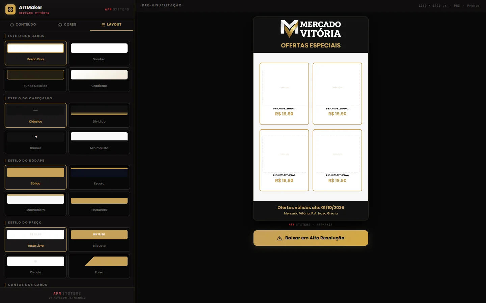

ArtMaker
Folletos de ofertas listos para los Estados de WhatsApp.


En esta página: 01Por qué existe
Por qué existe
Una persona me pidió ayuda para hacer las imágenes de promoción de los productos de su supermercado. Si yo las hacía, ella siempre dependería de mí. Por eso creé una herramienta que simplifica el trabajo: ella configura todo como quiere y recibe la imagen lista al final.
Problema, sistema y comprobación
Problema
Cada imagen de promoción dependería de alguien que supiera diseñarla.
Sistema
Generador de folletos de ofertas en 1080×1920, con el formato de los Estados de WhatsApp, en un único archivo HTML con Canvas. Guarda todo en el propio dispositivo.
Comprobación
33 pruebas
node --test en GitHub Actions. Verificadas el 9/11/2026.
Por dentro
-
Con la marca del supermercado
La app viene configurada con Mercado Vitória. Los datos de la tienda y de las ofertas entran en el editor, junto a la vista previa del folleto.
-
8 paletas predefinidas
Las paletas aparecen en miniatura, dibujadas por el propio motor del folleto.
-
Estilo y tema
Tipo de letra, marco, borde, esquinas y formato del precio, con tema claro y oscuro.
-
Listo para los Estados
El folleto sale en 1080×1920, con Compartir y Descargar, y queda guardado en el propio dispositivo.


Cómo se construyó
Arquitectura
ArtMaker es un solo index.html, con JavaScript puro, sin framework, build ni servidor. El editor guarda todo en un objeto estado; con cada cambio, la función desenharEncarte vuelve a dibujar el folleto en un Canvas 2D de 1080 × 1920. Las reglas sin DOM, como la lectura del precio, el contraste y la validación de los datos, están en un bloque marcado PURO, separado del dibujo. Los textos y el estilo van a localStorage, y las fotos, a IndexedDB.
Ver en el código: index.html L1206–1208 index.html L1443–1447 index.html L2126–2166 index.html L3255–3261 README.pt-BR.md L214–226
- Datos en el editor
- Estado del folleto
- Dibujo en el Canvas
- PNG para compartir
Decisiones técnicas
Toda la app en un
index.htmlElegí entregar la app entera en un
index.html, para que baste con enviar el archivo y abrirlo en el navegador. El logotipo predeterminado va incrustado en WebP, porque una imagen externa abierta directamente desde el disco contamina el canvas y el navegador bloquea la descarga. La CSP va en una meta tag, condefault-src 'none'y cada script inline permitido por su hash SHA-256; de fuera, solo Google Fonts.Ver en el código: README.pt-BR.md L161–164 README.pt-BR.md L174–177 index.html L9
Mismo código para vista previa, archivo y miniaturas
desenharEncarterecibe el contexto del canvas y opciones: cambio de contexto, de colores y de región. Así, la misma función dibuja la vista previa en vivo, el PNG exportado (sin marcas de edición como «Indique el precio»), las miniaturas de las 8 paletas y las de la pestaña Estilo, que muestran solo un recorte del folleto. No hay un segundo motor de dibujo que mantener sincronizado.Ver en el código: index.html L1443–1446 index.html L2126–2134 index.html L3107 index.html L3203–3214 index.html L3255–3259
Contraste corregido sin cambiar el color
La persona elige los colores libremente, así que una combinación puede dejar el texto ilegible.
contrastesigue la fórmula de las WCAG, yajustarCormantiene el tono elegido y oscurece o aclara solo lo necesario hasta alcanzar el mínimo: 3:1 en general y 4,5:1 en texto pequeño. El dibujo aplica esa corrección al nombre, al precio, al título y al precio tachado, y la pestaña Colores avisa cuando entra en juego.Ver en el código: index.html L1287–1313 index.html L1755 index.html L1989–1990 index.html L2060 README.pt-BR.md L102–104
Desafío
Guardado automático sin perder el trabajo
El folleto se guarda mientras se edita: el estado sin imágenes va a localStorage medio segundo después del último cambio, y las fotos van a IndexedDB, cada una con su propio id, en una cola por clave, para que siempre gane el último cambio. Mover un producto no vuelve a grabar la foto. Si otra pestaña graba el folleto, el evento storage hace que esta deje de guardar y avise. Los datos guardados o abiertos pasan por normalizarDados antes de entrar.
Ver en el código: index.html L2176–2213 index.html L2215–2260 index.html L1419–1441 README.pt-BR.md L119–126
Pruebas
Las 33 pruebas se ejecutan con node --test, sin dependencias. Como la app es un solo archivo, la prueba lee index.html, recorta el bloque PURO y lo ejecuta en un contexto aislado de node:vm: son 31 pruebas de precio, descuento, contraste, fechas, nombre del archivo y validación de proyectos. Las otras 2 recalculan los hashes de la CSP de index.html y de 404.html. GitHub Actions lo ejecuta todo en cada push, en Node 22.
Ver en el código: puro.test.mjs L1–17 puro.test.mjs csp.test.mjs testes.yml
Stack y enlaces
Stack
JavaScript, HTML5 Canvas, localStorage, IndexedDB, Web Share API, node:test, GitHub Actions